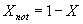
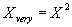
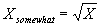

This fuzzy engine is designed to perform fuzzy evaluations in Java programs. It is not a fuzzy system shell but rather a set of classes and methods allowing evaluation of fuzzy rules given in the symbolic form. Current implementation of the fuzzy engine allows tight integration of the fuzzy reasoning into Java software, where all evaluations are performed by the fuzzy engine, while manipulation of the control flow and input-output operations are performed in Java. Such a structure allows significantly higher performance than a shell concept. The engine supports evaluation of fuzzy rules in the symbolic form; fuzzy and/or/not operations; arbitrary nesting of fuzzy expressions in the left part of a rule; multiple assignment operations in the right part of a rule; predefined and user-defined hedges; unconditional assignment operations; dynamically weighted rules; evaluation of single rules or rule blocks.
Linguistic variables represent a part that closely interacts both to Java code and fuzzy rules. The same linguistic variable can participate in fuzzy evaluations performed by different fuzzy engines. Each fuzzy assignment will be accounted for during defuzzification. Each linguistic variable has an arbitrary number of associated membership functions: each membership function is represented by a trapezoid. Trapezoidal membership functions allow simple implementation of the most widely used forms: rectangle, triangle and trapezoid.Creating a linguistic variable takes two steps:
1. Allocation of a linguistic variable"negative" here is the name which will be used to address this membership function (if angle is negative ...), other four parameters define four key points of a trapezoid. They follow in the order of left bottom, left top, right top and right bottom points.
Example: LinguisticVariable angle = new LinguisticVariable("angle");
The String argument will be used to address this particular linguistic variable in the rules (if angle is ...).2. Definition of membership functions
Example: angle.add("negative", -3.14, -3.14, 0.0314, 0);
Hedges allow to express different degrees of membership in a fuzzy set. The package has three predefined hedges:"not" -Arbitrary hedges can be defined by deriving classes from the base class Hedge. Method getName() should return a string containing the hedge name. Method hedgeIt() should perform the desired hedge operation.
"very" -
"somewhat" -
All fuzzy evaluations are based on the rules in the symbolic representation. Linguistic variables, membership functions, hedges and fuzzy operations are referenced by their respective symbolic names. Symbolic representation of the rules allows easy understanding of the rules and simplifies the debugging process. Fuzzy rules are represented by text strings in the following format:<label> if LV1 is <hedge ...> MF1 <and/or LV2 is <hedge ...> MF2 and/or ...> then LVN is <hedge ...> MFN ... < and rule label weight is <hedge ...> weightMF>"label" - a text label assigned to a rule. A rule's weight (default is 1.0) is changed by executing expression "rule label weight is weightMF" in the right part of a rule. The same label can be assigned to more than one rule. In this case weight change will affect all of the labeled rules.<label> set LV1 is <hedge ...> MF1 <and LV2 is <hedge ...> MF2 ...> <and rule label weight is <hedge ...> weightMF>
Example: start: if angle is ..."if" - a service word indicating the beginning of the left part (evaluation part) of a fuzzy rule."LV" - a linguistic variable. Linguistic variables are addressed by their names. Each linguistic variable has one or more associated membership functions.
"is" - a service word separating linguistic variable and hedges/membership function.
"hedge" - the engine has 3 predefined hedges: "not", "very" and "somewhat". The user can define arbitrary hedges and use them in rules.
Example: if weather is not very nice ..."MF" - a membership function. Membership functions are addressed by their names. Each membership function is defined as a trapezoid."and/or" - service words indicating logical operation to be performed on the neighboring fuzzy expressions. Priority of the and/or operations decreases from left to right and may be changed by applying parenthesis. The engine supports arbitrary number of expressions on the left part, arbitrary nesting and and/or operations.
Example: if angle is wide or (angle is normal and (speed is high or speed is normal)) ..."then" - a service word separating left part of expression from the right part (execution part). Result obtained from evaluation of the left part is used to perform fuzzy assignments in the right part. The form of fuzzy expressions is the same as in the evaluation part, except assignment is performed instead of evaluation. During the assignment, hedges apply to the result of evaluation part. Application of the hedges is local for each fuzzy expression. If more than one assignment is to be performed, then fuzzy expression should separated by the service word "and"Example: ...then power is very low and steering is toTheLeft"rule" - a service word indication that a rule's weight will be changed in this expression. This word is followed by a label for the rule whose weight is about to be changed.Example: ... then rule start: weight is low ..."weight" - this is a reserved linguistic variable. Linguistic variable "weight" is defined by the user and serves for the purpose of changing a rule's weight. A copy of this LV is created for each unique label. Changes of weight are performed by defuzzification of the copy assigned to a particular label, thus multiple weight changes are carried out in fuzzy manner. How much a rule's weight will be changed depends both on definition of membership functions for "weight", evaluation result after application of hedges and number of assignments.Example: LinguisticVariable weight=new LinguisticVariable("weight");When weight assignment is performed on the same rule that assigns the weight (see Example) then only one iteration of weight change is performed, i.e. it does not fall into an endless loop of weight change.
weight.add("low",0,0,0.2,0.3);
...
fuzzyEngine.evaluateRule("start: if angle is wide then rule start: weight is low");"set" - a service word for unconditional assignments. If "set" is encountered instead of "if", result of the left part evaluation is assumed to be 1.0 and all assignments are performed for that value.
Example: set power is low ...
All fuzzy evaluations are performed by a fuzzy engine. This Java class allows parsing and evaluation of fuzzy rules. The following example illustrates the main steps necessary for performing a fuzzy evaluation:1. Create Lingustic variables and define membership functionsA fuzzy engine can only parse and evaluate the rules that have been registered with the engine. A linguistic variable can be registered with more than one engine.
LinguisticVariable angle = new LinguisticVariable(?angle?);
angle.add(?negative?,-3.14,-3.14,0,0);
angle.add(?positive?,0,0,3.14,3.14);
LinguisticVariable power = new LinguisticVariable(?power?);
power.add(?decreased?,-2,-1,-1,0);
power.add(?increased?,0,1,1,2);2. Create a fuzzy engine
fuzzyEngine = new FuzzyEngine();3. Register all LVs
fuzzyEngine.register(angle);
fuzzyEngine.register(power);4. Peform fuzzy evaluations
fuzzyEngine.evaluateRule("if angle is negative then power is increased");5. Obtain the result(s)
double result = power.defuzzify();
The engine's function evaluateRule() performs parsing the string argument each time it is called. This leads to the waste of computing time and slows down the evaluation process. Class FuzzyBlockOfRules allows to increase execution speed by an order of magnitude by storing pre-parsed and optimized rules. The usage of BlockOfFuzzyRules is effective when a group of rules is evaluated over and over. The steps to use a block or rules:1. Create Lingustic variables and define membership functions
LinguisticVariable angle = new LinguisticVariable("angle");
angle.add("negative",-3.14,-3.14,0,0);
angle.add("positive",0,0,3.14,3.14);
LinguisticVariable power = new LinguisticVariable("power");
power.add("decreased",-2,-1,-1,0);
power.add("increased",0,1,1,2);2. Create a fuzzy engine
fuzzyEngine = new FuzzyEngine();3. Register all LVs
fuzzyEngine.register(angle);
fuzzyEngine.register(power);4. Create a block of rules
fuzzyBlockOfRules = new FuzzyBlockOfRules("if angle is negative then power is increased");5. Register the block
fuzzyEngine.register(fuzzyBlockOfRules);6. Parse the rules
fuzzyBlockOfRules.parseBlock();7. Perform the evaluation
fuzzyBlockOfRules.evaluateBlock(); - faster execution
fuzzyBlockOfRules.evaluateBlockText(); - slower execution, returns a String with evaluation results for every fuzzy expression8. Obtain the result(s)
double result = power.defuzzify();
Example